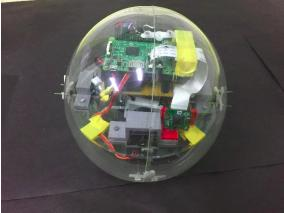
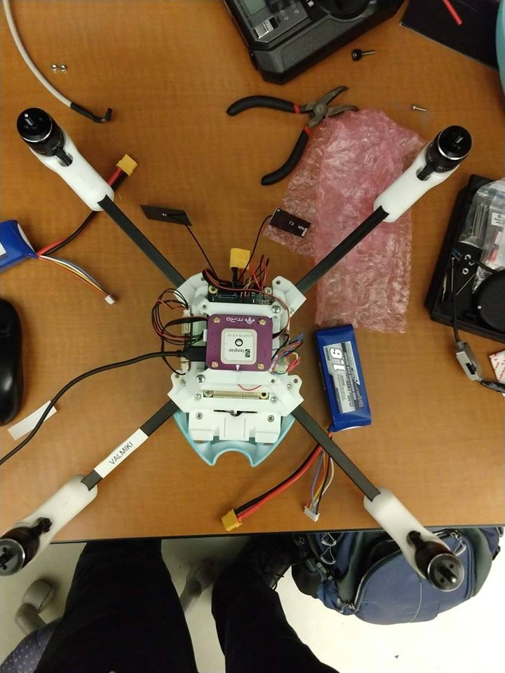

Disip - About
I utilise most of my free time working and educating myself about the robotics and controls.
Here is a comprehensive list of the projects I am working on or have taken up while my time
at IIT-B. I have worked on a bunch of technical & research projects involving drones.
Research Experience
Fault Detection in Robotic Swarms | Prof. Giovanni Beltrame
{kind=link}
Spherical Tele-operated Robot | Prof. Leena Vachhani & Prof. Dipti Gupta
|
 |
Duration: Dec' 2017 - May' 2018 At the Embedded Controls Lab, the spherical robot was developed previously. It is currently operated using This was my Bachelor's Thesis project and required me to do a thorough literature survey before |
{kind=link}
Technical Experience
The team EXO-FLY at IIT-B has been working for quite sometime on the development of a compact flying technology
for the Boeing sponsored competition Go-Fly. The control system has yet to be developed for the proposed on-paper
design for the vehicle. I have recently started working under the guidance of Prof. Srikant Sukumar. I am working on
modelling the system dynamics of the vehicle. Later, we intend to develop the control system for the same.
Setup of Spiri - Drone by Pleaides Robotics
|
 |
Duration: May' 2018 - Jul' 2018 Spiri is an autonomous drone equipped with Nvidia TX1/TX2 and stereo vision cameras that uses the Pixracer
The setup required loading the TX1 with the necessary packages including ROSBuzz. A Hardware-in-the-loop |
{kind=link}
Quadrotor 3D Planning and Navigation
Duration: May' 2017 - Jun' 2017
I spent my second-year summers getting acquainted with motion planning and navigation in Quadrotors.
I worked my way through ROS, and Gazebo to implement a basic motion planning strategy. I was also successful
in navigating the Quadrotor between desired waypoints using the MoveIt assistant.
I studied the problem of Simultaneous Mapping & Localisation and learnt to implement it using odometry and
and camera. This particular study had me intrigued about Robotics and I started educating myself about control
theory and it's applications in aerospace which I was already inclined towards.
Hydrogen Peroxide Ethanol Rover (HYPER) | Prof. Arindrajit Chowdhury
 |
Duration: Sept' 2016 - Apr' 2017
Drone survillence is a field that has seen a lot of growth in the past decade. A drone that can disguise itself in the environment
I was primarily working on the fabrication of the Ornithopter which involved design and manufacture of wings. We made large |
Rakshak, Student Technical Team | Prof. Aditya A. Paranjape
Duration: Sept' 2016 - Dec' 2016
Rakshak is a student technical team that works to develop an Unmanned Aerial Vehicles for Aero Design Competition
organised by the Society of Automotive Engineers-International, USA. I was recruited as part of the 40 membered student
team. At the Aerodynamics subsystem, we analysed and designed different factors to ensure a stable flight and best possible
aerodynamic performance. I worked for the selection of suitable airfoil. The factors maximum thickness to chord ratio,
coefficients of lift/drag/moment and stall characteristics were analysed.
Working with these two teams, I got an insight of the importance of control in robotics and wanted to study the field. I took up
my first course in Spring'17. Later, I started working on acquainting myself with Robotics & Controls.
Midget Jet Engine | Institude Aeromodelling Club,IIT-B
Acquired knowledge of Combustion Chambers and Jet propulsion & constructed a miniature Jet Engine
Used Electric duct fan as a compressor with it’s output directed into combustion chamber which was mimicked
using steel cans and sheets, where output was ignited with propane to generate thrust
Course Projects
Certain courses in my curriculum required me to complete a project extending over a month or so.
These projects carry a
10%-20% weightage of the total credits for the course.
Controller Design of an Unmanned Aerial Vehicle | Adaptive Control Theory, Prof. Srikant Sukumar
-
For the course on Adaptive Control Theory, our team of 3 studied the formulation of the adaptive backstepping method and
it's implementation to control the longitudinal flight dynamics (Flight Path Angle & Veloctiy) of a fixed wing UAV under the
constraint of thrust saturation as presented in the scientific paper by F. Gavilan et. al., “Adaptive Control for Aircraft Longitudinal
Dynamics with Thrust Saturation”, JOURNAL OF GUIDANCE, CONTROL, AND DYNAMICS Vol. 38, No. 4, April 2015.
Mission Design for Atlas-Centaur SLV-3D rocket | Spaceflight Mechanics, Prof. Ashok Joshi
-
The Einstein Observatory, HEAO-2, the first fully imaging X-Ray Telescope in space was launched on an Atlas-Centaur SLV-3D
booster rocket into a near-circular orbit. For the course on Spaceflight Mechanics, I reproduced the basic burnout profile including
the launch and maneuver trajectories of the rocket and orbital decay of the satellite after the mission.
Analysis of Mechanical Properties of Bones | Mechanics of Materials, Prof. Aparna Singh
-
The course on Mechanical Properties of Materials required us to study the behavior of bones under forces such as tensile & sheer stresses,
compression & fatigue. It involved the examination of properties of bones due to their material composition and mechanical structure.
Analysis of Point of Purchase of Packed Food | Data Analysis & Interpretation, Prof. Shobha Shukla
-
In a team of 4, we surveyed a total of 18 eateries in the vicinity of our IIT-B campus. We compiled a data on the consumer behavior,
sales' statistics and nutritional data of around 126 packed food good to establish a relationship in the mentioned variables.
We consilated a brief report commenting on the point of purchase of these packed goods.